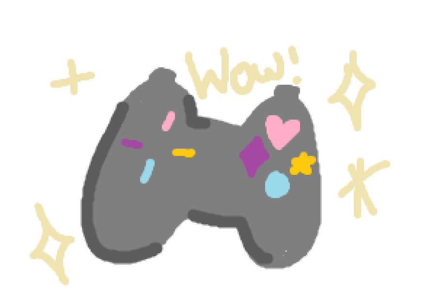
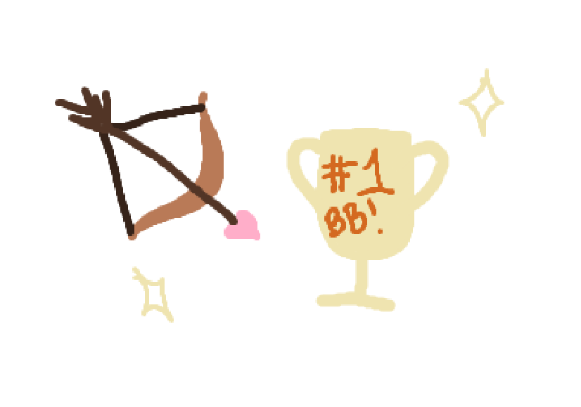
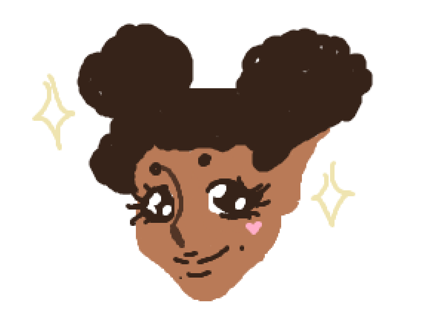
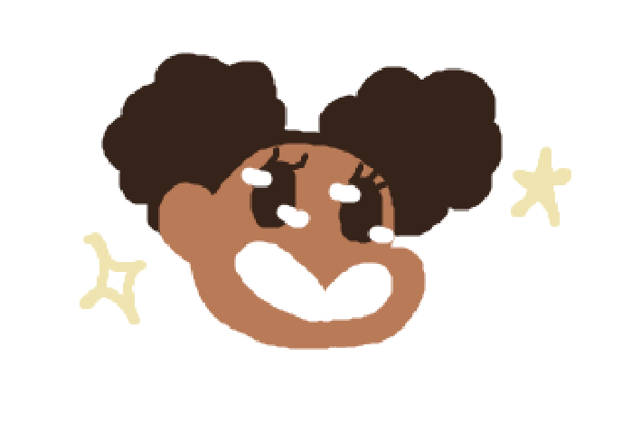
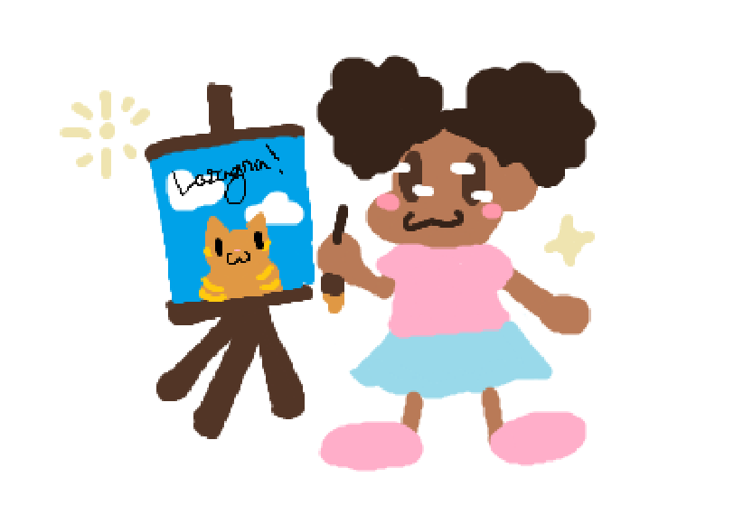

Video games!
I've been a fan of video games for ages now, my first ever console was a Leapfrog,
of
course. When I was a wee bit older, my grandma bought my siblings and I a Nintendo Wii. I remember
loving just dance, LEGO Harry Potter, and of course Wii Sports Resort. Now that I'm a university
student, my favourite video games are things like Stardew Valley, Hades, and my number one favourite,
(GOTY 2024) Baldur's Gate Three

Achievement Hunting!
As a huge fan of video games and a neurodivergent nerd, I am absolutely in
love
with
100%-ing games. I play games on my gaming laptop (one day I'll have an actual PC). The first game I ever
100%-ed was Hades, I'd give it a difficulty rating of 5/10, the whole game is about trial and error,
with it being a Roguelike after all. I had 98% completion in Stardew Valley, but there is a new update
that jsut came out, which means I will fall down the farming rabbit hole again soon enough. Currently,
on BG3 (my beloved), I have 68% of the achievements, which I will already give a difficulty rating of
8/10 since there are SO many playthroughs and small lil things that you have to do, with some of the
achievements needing a playthrough on the most difficult setting with only ONE save...On a game that is
infamous for people save-scumming (I'm guilty of this as well, don't @ me)

Anime!
I remember loving Digimon and Pokemon (Indigo League and Black & White) as a kid. Some of
my
most
nostalgic memories are watching
Digimon while I play with Littlest Pet Shop on top of my Winnie The Pooh blanket when I was sick. In
elementary school, I got into shows like Naruto, RWBY, and Ouran Highschool Host Club (kiss kiss, fall
in love!). Nowadays, I love anime like Jojo's Bizarre Adventure, Jujutsu Kaisen, and Chainsaw Man. I
enjoy Shounen anime a little more than Shoujo anime, but I enjoy romance and drama anime every now and
again. I'd just rather watch crazy anime battles with rock music in the background while I have rewind
every two seconds because I was looking at the pretty colours and not the subtitles.

Cartoons!
Similar to anime, I've been watching cartoons for forever. I loved Justice
League Unlimited, Powerpuff Girls, Teen Titans, TMNT, Ben10, Winx Club, Bratz, Monster High and Ever
After
High. Most of these shows I had toys for of course. I still hold a place in my heart for cartoons like
Winx
and Teen Titans, still making jokes about them with my family. The cartoons I love now are shows like
Invincible, The Legend of Vox Machina, and Arcane, shows with more mature themes and topics, including
more mature comedy. I absolutely ADORE cartoons, anime, and animation. I find the ability to create life
through art amazing, and mesmerizing

Art!
WEEWOOWEEWOO Awesome segue from the last topic, yessirrrrrrr! I love art, I've been
drawing for an insanely long time, I have a shelf in my room that is FILLED with sketchbooks from over
ten
years ago to now. Art has helped me express myself, gotten me through tough times, and allowed me to
explore
my own mind, dude (read that last part with a surfer voice). One of my favourite artists of all time is
Banksy. I went to see an exhbit about his work and I fell completely in love with the messages and
rebellion
he would show in his art. Other artists that I really enjoy are Alberto Mielgo for his work with the
Spiderverse movies, and I love Fortiche Studios known for the show Arcane as well as their other work
with
Riot Games. My own art is inspired heavily by video games, anime, and video games, all things that I
enjoy
the art that I find within them as wella s things that have brought me immense joy throughout my life.
Fun
fact, my sister is also a huge inspiration for me as she would always draw as I was growing up. Being
her
little sister, of course I wanted to be just like her growing up, wanting to draw like her, etc. I
remember
during a road trip I was practically begging her to teach me how to draw. She is still a talented artist
to
this day, and I'm just as proud of her as she is of me.